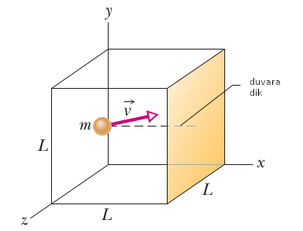
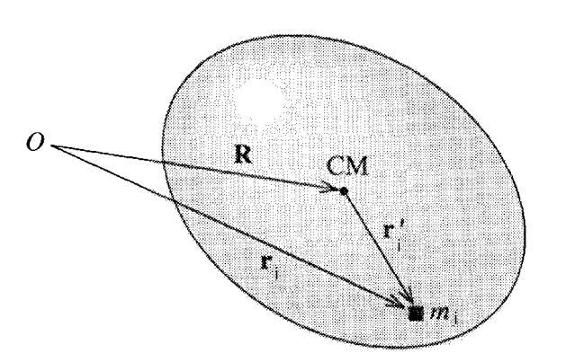

Elastik Çarpışma (Elastic Collision)
$m_1,m_2$ kütlesine sahip $v_1,v_2$ hızında iki küre arasında mükemmel bir elastik çarpışma olduğunu düşünelim, yani çarpışma öncesi ve sonrası enerji kaybı yok, bu durumda, sistemin toplam momentumu da önce ve sonra aynı olacaktır,
$$ m_1 \vec{v}_1 + m_2 \vec{v}_2 = m_1 \vec{v}_1' + m_2 \vec{v}_2' $$
ki $\vec{v}_1,\vec{v}_2,\vec{v}_1',\vec{v}_2'$ hız vektörleri, $\vec{v}_1',\vec{v}_2'$ çarpışma sonrası hız vektörleri.
Eğer momentum muhafaza ediliyorsa, birinci topun kaybettiği ya da kazandığı momentum ikinci topa eklenecek ya da ondan çıkartılacaktır.
$$ m_1 \vec{v}_1 = m_1 \vec{v}_1' - \Delta \vec{p} $$
$$ m_2 \vec{v}_2 = m_2 \vec{v}_2' + \Delta \vec{p} $$
Üstteki idealize ortamda momentum transferi sadece çarpışma çizgisi üzerinde olabilir, bu çizgi, ya da vektör yönü eğer iki topun arasında teğet bir düzlem düşünsek ona dik olan bir vektör olacaktır, ona $n$ diyelim. O zaman, ve $p$ vektörünün büyüklüğünü $P$ ile gösterirsek,
$$ \vec{v}_1' = \vec{v}_1 - (P / m_1) \vec{n} \qquad (1) $$
$$ \vec{v}_2' = \vec{v}_2 + (P / m_2) \vec{n} \qquad (2) $$
Eğer $P$ skalar büyüklüğünü bulabilirsek, çarpışma sonrası yeni hızı elde edebiliriz.
Üstteki resme bakınca görüyoruz ki $v_1$ ve $v_2$ her biri iki tane ayrı vektörün toplamı olarak temsil edilebilir, bu vektörlerden biri çarpışma, momentum transfer çizgisine dik, diğeri ona paralel. Bu bilgi ile, $v_1,v_1',v_2,v_2'$ şöyle temsil edilebilir,
$$ \vec{v}_1 = a_1 \vec{n} + b_1 \vec{q}, \qquad \vec{v}_2 = a_2 \vec{n} + b_2 \vec{q} \qquad (3) $$
$$ \vec{v}_1' = a_1' \vec{n} + b_1' \vec{q}, \qquad v_2' = a_2' \vec{n} + b_2' \vec{q} \qquad (4) $$
$a_1,a_2,b_1,b_2$ tek sayı değerleridir.
(1) formülüne (3a)'yı sokarsak,
$$ v_1' = a_1 \vec{n} + b_1 \vec{q} - (P/m_1) \vec{n} $$
$$ = (a_1 - p/m_1) \vec{n} + b_1 \vec{q} $$
$$ v_2' = a_2 \vec{n} + b_2 \vec{q} + (P/m_2) \vec{n} $$
$$ = (a_2 + P/m_2) \vec{n} + b_2 \vec{q} $$
Ve tabii ki form olarak $\vec{v}_1' = a_1' \vec{n} + b_1' \vec{q}$, ve $\vec{v}_2' = a_2' \vec{n} + b_2' \vec{q}$ olduğunu biliyoruz, o zaman birbirine tekabül eden kısımlara bakarak
$$ a_1' = a_1 - (P/m_1), \qquad b_1' = b_1 \qquad (5) $$
$$ a_2' = a_2 + (P/m_2), \qquad b_2' = b_2 \qquad (6) $$
Şimdi $P$ tek sayı değerini bulmak için enerji muhafazası formülünü kullanabiliriz. Tek boyutta $1/2 m v^2$ şeklinde olan formülü $\frac{1}{2} m \cdot \vec{v}\cdot\vec{v}$ olarak değiştirmek lazım. Ya da $\frac{1}{2} m <\vec{v},\vec{v}>$, ya da $\frac{1}{2} m ||v||^2$. O zaman
$$ \frac{m_1}{2} ||v_1||^2 + \frac{m_2}{2} ||v_2||^2 = \frac{m_1}{2} ||v_1'||^2 + \frac{m_2}{2} ||v_2'||^2 $$
$||v_1||^2$ ve $||v_1'||^2$, vs hesabının kolay bir yolu var, eğer üstteki resme bakarsak mesela $||v_1||$ büyüklüğü kenarları $a_1$ ve $b_1$ olan bir üçgenin hipotenüsü olarak görülebilir.
$$ \frac{m_1}{2} (a_1^2+b_1^2) + \frac{m_2}{2} (a_2^2+b_2^2) = \frac{m_1}{2} (a_1'^2+b_1'^2) + \frac{m_2}{2} (a_2'^2+b_2'^2) $$
Daha önce bulduğumuz (5),(6) değerlerini üstteki formüle sokunca,
$$ \frac{m_1}{2} (a_1^2+b_1^2) + \frac{m_2}{2} (a_2^2+b_2^2) = \frac{m_1}{2} \left( \left(a_1-\frac{P}{m_1} \right)^2 + b_1^2 \right) + \frac{m_2}{2} \left( \left(a_2-\frac{P}{m_1} \right)^2 + b_2^2 \right) $$
$b_1^2$ ve $b_2^2$ iptal olur. Her şeyi $P$ sol tarafta olacak şekilde tekrar düzenlersek,
$$ P = \frac{2 m_1 m_2 (a_1-a_2)}{m_1+m_2} $$
Bu degeri (1) ve (2)'ye sokarsak,
$$ \vec{v}_1' = \vec{v}_1 - \frac{2 m_2 (a_1-a_2)}{m_1+m_2} \vec{n} $$
$$ \vec{v}_2' = \vec{v}_2 + \frac{2 m_1 (a_1-a_2)}{m_1+m_2} \vec{n} $$
Üstteki formülü değişik kaynaklarda, mesela [3], biraz farklı formda görüyoruz, mesela
$$ \vec{v}_1' = \vec{v}_1 - \frac{2m_2}{m_1+m_2} \frac{< \vec{v}_1-\vec{v}_2, \vec{x}_1-\vec{x}_2 >}{||\vec{x}_1-\vec{x}_2||^2} (\vec{x}_1-\vec{x}_2) $$
$$ \vec{v}_2' = \vec{v}_2 - \frac{2m_1}{m_1+m_2} \frac{< \vec{v}_2-\vec{v}_1, \vec{x}_2-\vec{x}_1 >}{||\vec{x}_2-\vec{x}_1||^2} (\vec{x}_1-\vec{x}_2) $$
Fakat biraz dikkat edilince mesela $a_1-a_2$'nin $\vec{n}$ yönündeki hız farkı olduğunu görürüz, yani
$$ a_1-a_2=\frac{< \vec{v}_1-\vec{v}_2,\vec{x}_1-\vec{x}_2 >}{||\vec{x}_1-\vec{x}_2||} $$
Geri kalanlardan zaten $\vec{n} = \vec{x}_1-\vec{x}_2/||\vec{x}_1-\vec{x}_2||$ ve $m_1,m_2$ değerleri de aynı şekilde iki tarafta uyar.
İki kütlenin eşit olduğu durumlarda (ki moleküler simülasyonlarda bu çok rahat kabul edilebilir), formül daha da basitleşir [4],
$$ v_1' = v_1 - \left( (v_1-v_2) \cdot \vec{n} \right) \vec{n} $$
$$ v_2' = v_2 - \left( (v_2-v_1) \cdot \vec{n} \right) \vec{n} $$
ki $\vec{n} = \frac{x_1-x_2}{|x_1-x_2|}$
Basınç (Pressure) ve Parçacık Çarpışması
Bir sıvı içinde duran bir objeye tek uygulanan etki, stres onu sıkıştıran türden bir etkidir. Diğer bir deyişle bir sıvı içindeki objenin hissettiği kuvvet onun yüzeyine her zaman diktir.

Bir sıvının içindeki objeye uyguladığı basıncı, o objeye uygulanan birim alanda uygulanan kuvvet olarak temsil edilebiliriz, kuvvet $F$ ve alan $A$ ise,
$$ P \equiv \frac{F}{A} $$
Eğer belli bir noktadan bahsetmek istersek, diyelim $dA$ sonsuz ufaklıktaki bir alana uygulanan $dF$ kuvveti,
$$ P = \frac{dF}{dA} $$
O zaman belli bir alandaki basınç için o alan üzerinden entegral almak gerekir.
Basıncın birimi $N / m^2$, şaşırtıcı olmasa gerek, kuvvet birimi Newton, ve alan birimi $m^2$.
İdeal Gazlar Kanunu (İdeal Gas Law)
Peki mikro etkileşimlerden yola çıkarak basınç kavramını türetebilir miyiz acaba? 19'uncu yüzyıl sonlarına doğru bu başarıldı ve gerçekten temel mekanik kanunlarının basit bir model üzerinen makro açıklamalar yapabilmesinin çok güzel bir örneği.
Basıncın gaz moleküllerinin bir yüzeye çarpmasından ortaya çıktığını hatırlayalım. Bu kuvvet tabii ki Newton kanunundan hareketle,
$$ f = m a = m \frac{\mathrm{d} v}{\mathrm{d} t} $$
Hız $v$'ye molekül içinde olduğu kabin / yüzey duvarına çarptığında ona dik olan hız diyelim [1]. Bu türevi hesaplamak için, ki birim zamanda hız değişimi gerekiyor, kenarları $L$ uzunluğunda bir küp içinde tek bir gaz molekül olduğunu düşünelim.
Basitleştirme amacıyla diyelim ki bu molekül sürekli küp kutu içinde ileri geri gidip geliyor, bir duvara çarpınca bir süre sonra geri geliyor. Bu molekül bir duvara çarptığında $v$ hızında çarptığında (yani $mv$ momentumuyla) elastik olarak geri sekecektir, ve $-v$ ile tam ters yöne geri gitmeye başlayacaktır.

O zaman her çarpışma için hız değişimi $2v$, momentum değişimi ise $2mv$ olur.
Tabii aslında eğer daha genel formülize etmek gerekirse bu çarpışma sırasında $\bar{v}$ hızının duvara dik olan bileşeni $v_x$'yi düşünüyoruz.

Yani momentum degisimi
$$ \Delta p_x = (-m v_x) - (m v_x) = - 2 m v_x $$
Yani duvara transfer edilen momentum $2 m v_x$.
Birim zaman $\Delta t$'ye bir molekün iki çarpışma arasında geçen zaman dersek, ve $v_x$ hızında $2L$ yol katedilmişse, $\Delta t = 2 L / v_x$ demektir, ve
$$ F = \frac{\Delta p_x}{\Delta t} = \frac{2 m v_x}{2 L / v_x} = \frac{m v_x^2}{L} $$
Basınç birim alana uygulanan kuvvettir, ve küpün bir kenarının $L^2$ alaninda olduğunu düşünürsek,
$$ P = \frac{m v^2}{L^3} = \frac{m v^2}{V} $$
$V$'yi kutunun hacmi olarak aldık, ve $V = L^3$.
Birden fazla molekülü düşünmek istiyoruz şimdi, mesela bir averaj üzerinden.. Fakat her molekül hem negatif hem pozitif yönde aşağı yukarı aynı miktarda hareket yapar (rasgele hareket olduğu için) ve bu tür bir hareket üzerinden averaj almak bizi sıfır değerine götürür. Bu sebeple ortalamasını almadan önce hızların karesini almak istiyoruz,
$$ \bar{v^2} = \frac{v_1^2 + v_2^2 + ... + v_N^2 }{N} = \frac{\sum_i v_i^2}{N} $$
ve ortalama değeri bulmak için $\sqrt{\bar{v^2}}$ kullanıyoruz. Bu hesaba kök kare ortalaması (root mean square -RMS-) ismi de verilir. Şimdi tüm $N$ moleküller üzerinden bir basınç hesaplamak istersek, $N$ tane molekül, ama belli bir anda sadece Kartezyen kordinat sisteminde sadece üç yönden sadece biri yönünde etki var, o zaman $N$ ile çarpıp 3'e bölmek lazım,
$$ P = \frac{N}{3} \frac{m \bar{v^2}}{V} $$
Bu formül içinde bir kinetik enerji formülasyonu görülebiliyor, averaj kinetik enerjiye $\epsilon = m \bar{v^2} / 2$ dersek, üstteki formülü
$$ PV = \frac{N}{3} m \bar{v^2} = \frac{2}{3} N \epsilon $$
olarak yazabiliriz.
Eğer bu formülü sıcaklık içerek şekilde değiştirmek istiyorsak; biliyoruz ki sisteme eklenen her Joule enerji ve bir derece sıcaklık değişimi arasındaki ilişkiyi $k$ sabiti kontrol eder [5, 29-16] bu sabit $k = 1.38 x 10^{23}$ Joule / Kelvin'dir, o zaman enerjiden sıcaklığa geçiş için $kT$ kullanabiliriz, hatta bir $3/2$ eklenerek üstteki 2/3 iptali amaçlanır,
$$ \epsilon = \frac{3}{2} k T $$
Ve,
$$ PV = \left( \frac{2}{3} N \right) \left( \frac{3}{2} k T \right) = N k T $$
Devam edelim, $n = N / N_A$ olduğunu da biliyoruz ki $N_A = 6.02 x 10^{23}$, Avagadro'nun sayısı, $n$ örneklemdeki mol sayısı, $N$ ise örneklemdeki tüm moleküller [2, sf. 550],
$$ PV = n N_A k T $$
Tabii bu bizi $R$ denen bir diğer sabite götürüyor, $R = 8.31 J/mol \cdot K$. Onun $k$ ve $N_A$ ile ilişkisi şöyle,
$$ k = \frac{R}{N_A} $$
O zaman,
$$ PV = n R T $$
İdeal gazlar kanununa erişmiş olduk.
Parçacıklar, Çok Parçacıklı Sistemler, Katı Gövde (Rigid Body)
Kütle Merkezi
Küresel, birörnek parçacıklara uygulanan kuvvetin onların merkezine uygulandığı farzedilebilir, ya da parçacık sanki noktasal bir parçacık imiş gibi işlemler yapılabilir. Fakat bu faraziyeyi nasıl doğrularız? Ayrıca farklı şekillerde, homojen bir maddeden oluşmayan objeleri nasıl idare ederiz?
Burada kütle merkezi (center of mass) kavramı yardımcı olur, mesela $N$ tane $m_i$ kütlesine sahip parçacığın kütle merkezi
$$ r_c = \sum _{i=1}^{N} \frac{m_i}{m} r_i = \frac{1}{m} \sum _{i=1}^{N} m_i r_i $$
ile hesaplanabilir. Bu bir nevi bir ağırlıklı ortalama. $O$ bir referans noktasıdır, mesela kordinat orijini, $r_i$ ise $O$'dan parçacık konumuna işaret eden bir vektör, parçacığın yeri [6, sf. 77].

Dikkat edersek parçacıklar ayrı ayrı duruyor, ama birazdan göreceğiz ki bu parçacıklar tek bir katı gövde objenin içinde olsalar da hesap geçerli oluyor. Hatta gövde katı olmasa bile, mesela titreşen, salınımda olan moleküllere, öğelere sahip objeler bile belli şartlara uyuyorlarsa aynı kurallar ile idare edilebiliyorlar. $F_{ij}$ her $i$ parçacığının $j$ parçacığından hissettiği kuvvet olsun, ve $F_i$ değeri de $i$ parçacığı üzerindeki tüm dış kuvvetlerin toplamı olsun. Newton'un ikinci kuralını her parçacık için yazarsak, $i$'nin hissettiği tüm kuvvetlerin toplamı solda kütle çarpı ivmeye eşit olacaktır,
$$ m_i \ddot{r}_i = \sum _{j \ne i} F_{ij} + F_i $$
ki $\ddot{r} = \mathrm{d}^2 / \mathrm{d} t^2 r$, zamana göre ikinci türev anlamında.
Fakat Newton'un etki-tepki üçüncü kuralına göre her parçacık uyguladığı kuvvet kadar ters yönde geri bir kuvvet hisseder, yani $F_{ij} = -F_{ji}$, olmalı, o zaman her iki tarafta tüm $i$'ler üzerinden bir toplama yapınca parçacık sistemindeki bu "iç" kuvvetler birbirini nötralize etmeliler, üstteki formülden geriye kalanlar,
$$ \sum m_i \ddot{r}_i = \sum F_i $$
olur. $\sum F_i$ değeri sisteme uygulanan tüm dış kuvvetler $F_{ext}$ olarak görülebilir. Sol tarafı $m$ ile hem bölüp, hem çarpalım,
$$ m \frac{\mathrm{d}^2}{\mathrm{d} t^2} \underbrace{\sum \frac{m_i}{m} r_i}_{r_c} = F_{ext} $$
İşaretli yerde bir $r_c$ elde ettiğimizi görüyoruz, o zaman
$$ m\ddot{r}_c = F_{ext} $$
diyebiliriz, yani tüm sistemin kütle merkezi tek bir parça gibi görülebilir, hesaplarda $m$ ve $F_{ext}$ ile beraber bu şekilde kullanılabilir, ki o merkezin ivmesi $\ddot{r_c}$ olacaktır.
İşin ilginç tarafı bu sistem ayrı ayrı parçalar olsun, ya da aynı katı gövde içindeki "bloklar" olsun bu hesap yine işliyor olacaktır, çünkü düşünürsek bir katı obje içindeki blokların, parçacıkların da birbiri üzerinde kuvvetleri de birbirini nötralize ederler, hatta katı olmayan ama parçaları titreşen obje için de aynı argüman, ve aynı formül kullanılabilir.
Toplam lineer momentum oldukça basit,
$$ P = \sum_i p_i = \sum_i m_i \dot{r}_i = M \dot{R} $$
Yani kütle merkezi üzerinden tüm kütle için bir momentum kullanılabilir.
Toplam Açısal Momentum
Tek parça için $l = r \times p$ olan momentumların bir parçacık sisteminde hesaplamak istersek daha önce lineer momentumda olduğu gibi toplam alabiliriz,
$$ L = \sum_{i=1}^{N} l_i = \sum_{i=1}^{N} r_i \times p_i $$
Bir katı kütlede hesap aynıdır, ve daha önce gördüğümüz kütle için parçacıkların birbiri üzerine uyguladığı kuvvetlerin iptal olması durumunu, parçacıkların birbirine uyguladığı torkların iptali olarak açısal ortama taşıyabiliyoruz, yani üstteki formül doğru, detaylar için [7, sf. 94].
Kütle merkezinin toplam açısal momentumun hesabında oynadığı rol biraz daha karmaşık ama bir o kadar önemli [7, sf. 368].
Yine bir katı gövde düşünelim, $N$ tane her biri $m_i$ ağırlığında parçacıktan oluşuyor olsun, altta resmedildiği gibi, kütle elipsoid şeklinde.

$m_i$'nin herhangi bir şekilde seçilen referans / orijin noktası $O$'ya göre olan yeri $r_i$ ile gösteriliyor. Kütle merkezi (center of mass) CM ile, CM'nin $O$'ya göre yeri $R$, $m_i$'nin CM'ye izafi olarak yeri $r_i'$. Yani
$$ r_i = R + r_i' \qquad (7) $$
doğru olacak. Şimdi $O$'ya göre parçacık $i$ için açısal momentum hesaplarsak
$$ l_i = r_i \times p_i = r_i \times m_i \dot{r}_i $$
$l,p,r$ vektörsel değerler.
O zaman $O$ referansina izafi olarak toplam momentum
$$ L = \sum_i l_i = \sum_i r_i \times p_i = \sum_i r_i \times m_i \dot{r}_i $$
Eğer (7) denklemini üste sokarsak,
$$ L = \sum_i (\dot{R} + \dot{r}_i') \times m_i (\dot{R} + \dot{r}_i' ) $$
Şu kuralı [3] kullanarak
$$ (A + B) \times (C+D) = (A \times B) + (A \times C) + (B \times C) + (B \times D) $$
açılımı yapabiliriz,
$$ = \sum_i (\dot{R} + \dot{r}_i') \times (m_i \dot{R} + m_i \dot{r}_i' ) $$
$$
= \sum_i (R \times m_i \dot{R}) +
(R \times m_i \dot{r}_i') +
(r_i' \times m_i \dot{R}) +
(r_i\ \times m_i \dot{r}_i')
$$
$M = \sum_i m_i $ diyelim, ki $M$ tüm kütle,
$$ L = R \times M\dot{R} + R \times \sum m_i \dot{r}_i' + (\sum r_i' m_i) \times \dot{R} + \sum r_i' \times m_i \dot{r}_i' \qquad (8) $$
Bu son denklem üzerinde oldukca fazla basitleştirme mümkün. Mesela üçüncü terimde parantezler içinde olan formül sıfıra eşit, niye? Kütle merkezi formülünü yazarsak,
$$ R = \frac{1}{M} \sum m_i r_i $$
$$ MR = \sum m_i r_i $$
Aynı şekilde izafi açılımı yapalım,
$$ = m_i (R + r_i') = \sum m_i R + \sum m_i r_i' $$
Yani
$$ MR = MR + \sum m_i r_i' $$
elde ederiz, ve bu formülün doğru olması için $\sum m_i r_i' = 0$ olması gerekir.
Yani (8) denkleminin üçüncü terimi sıfır. O terimin türevini alırsak ikinci terimin elde edileceğini görürüz, o zaman o da sıfır olur. Geriye kalanlar,
$$ L = R \times P + \sum_i r_i' \times m_i \dot{r}_i' $$
Birinci terim kütle merkezinin $O$'ya göre açısal momentumu, ikincisi hareketin kütle merkezine göre olan açısal momentumu. Üstteki formül sayesinde bir katı kütlenin açısal momentumunu iki parçaya bölerek düşünmek mümkün oluyor.
CM Torku CM Açısal Momentumu
Şimdi şu soruyu soralım: katı kütlenin açısal momentum değişimi (dönüşsel kuvvet, tork) ona uygulanan, ve yine onun CM'sine göre uygulanmış dış torka eşit midir? Cevap evet olacak ama bu aslında ilk başta çok bariz olmayabiliyor, çünkü CM ivmeleniyor, bu eşitlik o durumda da geçerli olur mu? Fakat CM ivmeleniyor olsa bile cevap değişmiyor.
İspatlamak için CM etrafındaki açısal momentumu formülize edelim [9, sf 37],
$$ L_{CM} = \sum r_i' \times m_i \dot{r}_i' $$
CM etrafında uygulanan tork, ustteki açısal momentumun zamansal türevidir,
$$ \dot{L}_{CM} = \sum \dot{r}_i \times m_i \dot{r}_i' + \sum r_i' \times m_i\ddot{r}_i' $$
Eşitliğin sağındaki ilk terim sıfır çünkü iki paralel vektörün çapraz çarpımı sıfırdır. Kalanlarla devam edersek, $r_i = r_i' + R$ olduğu için oradan $\ddot{r}_i = \ddot{r}_i' + \ddot{R}$ ve oradan $\ddot{r}_i' = \ddot{r}_i - \ddot{R}$ diyoruz, üstteki ikinci terimde yerine koyunca
$$ = \sum r_i' \times m_i (\ddot{r}_i - \ddot{R}) $$
$$ = \sum (r_i' \times m_i \ddot{r}_i) - (r_i' \times m_i \ddot{R}) $$
$$ = \sum (r_i' \times m_i \ddot{r}_i) - \sum (r_i' \times m_i \ddot{R}) $$
İlk terimde kuvvet tanımı görülüyor,
$$ = \sum (r_i' \times F_i ) - \sum (r_i' \times m_i \ddot{R}) $$
İkinci terimde $m_i$ yer değiştirebilir,
$$ = \sum (r_i' \times F_i ) - \sum (m_i r_i' \times \ddot{R}) $$
$\sum m_i r_i'=0$ olduğunu hatırlarsak ikinci terim kaybolur,
$$ = \sum r_i' \times F_i $$
Geriye kalan dışarıdan CM etrafında uygulanan tork tanımı değil midir? Evet. O zaman dışarıdan CM etrafında uygulanan tork ile başladığımız ifade $\dot{L}_{CM}$ yani CM etrafındaki momentum değişimi arasındaki eşitliği ispatlamış olduk.
Kaynaklar
[1] Chang, Physical Chemistry for the Biosciences, https://chem.libretexts.org/@go/page/41408
[2] Resnick, Fundamentals of Physics, 10th Ed
[3] Wikipedia, Elastic collision, https://en.wikipedia.org/wiki/Elastic_collision
[4] Masson, Elastic Collisions in 3D, https://exploratoria.github.io/exhibits/mechanics/elastic-collisions-in-3d/index.html
[5] Feynman, Feynman Lectures on Physics, I
[6] Levi, Classical Mechanics with Calculus of Variations and Optimal Control
[7] Taylor, Classical Mechanics
[8] Bayramlı, Cok Degiskenli Calculus, Ders 3
[9] Taylor, Classical Mechanics Problem Solutions